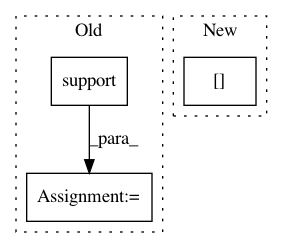

88e24ee24ff2152876552e7821e8b2f6dea0c313,pyannote/audio/pipeline/overlap_detection.py,OverlapDetection,loss,#OverlapDetection#Any#Any#,147
Before Change
if track1 == track2:
continue
reference.add(track1[0] & track2[0])
reference = reference.support().to_annotation()
uem = get_annotated(current_file)
p = precision(reference, hypothesis, uem=uem)
r = recall(reference, hypothesis, uem=uem)
After Change
else:
reference = current_file["annotation"]
overlap_reference = self.to_overlap(reference)
current_file["overlap_reference"] = overlap_reference
uem = get_annotated(current_file)
p = precision(overlap_reference, hypothesis, uem=uem)
In pattern: SUPERPATTERN
Frequency: 3
Non-data size: 3
Instances
Project Name: pyannote/pyannote-audio
Commit Name: 88e24ee24ff2152876552e7821e8b2f6dea0c313
Time: 2020-02-27
Author: hbredin@users.noreply.github.com
File Name: pyannote/audio/pipeline/overlap_detection.py
Class Name: OverlapDetection
Method Name: loss
Project Name: pyannote/pyannote-audio
Commit Name: 5a1dba682a5eccd4f0854553c07cd2b21909f1ec
Time: 2020-03-17
Author: bredin@limsi.fr
File Name: pyannote/audio/labeling/tasks/resegmentation.py
Class Name: Resegmentation
Method Name: _decode
Project Name: pyannote/pyannote-audio
Commit Name: c6e474fb13be0362c6f239f81c128f6d4c751da4
Time: 2019-07-01
Author: bredin@limsi.fr
File Name: pyannote/audio/labeling/tasks/resegmentation.py
Class Name: Resegmentation
Method Name: apply